# Load
library(tidyverse)
library(tidybayes)
library(rstan)
library(patchwork)
library(posterior)
library(ggdag)
library(dagitty)
# Drop grid lines
theme_set(
theme_gray() +
theme(panel.grid = element_blank())
)6 The Haunted DAG & The Causal Terror
Load the packages.
6.0.0.1 Overthinking: Simulated science distortion.
6.1 Multicollinearity
6.1.1 Multicollinear legs.
Let’s simulate some leg data.
n <- 100
set.seed(909)
d <- tibble(height = rnorm(n = n, mean = 10, sd = 2),
leg_prop = runif(n = n, min = 0.4, max = 0.5)) |>
mutate(leg_left = leg_prop * height + rnorm(n = n, mean = 0, sd = 0.02),
leg_right = leg_prop * height + rnorm(n = n, mean = 0, sd = 0.02))As you might expect in real-life data, the leg_left and leg_right columns are highly correlated.
d |>
summarise(r = cor(leg_left, leg_right) |> round(digits = 4))# A tibble: 1 × 1
r
<dbl>
1 1.00Have you ever even seen a \(\rho = .9997\) correlation, before? Here’s what such data look like in a plot.
d |>
ggplot(aes(x = leg_left, y = leg_right)) +
geom_point(alpha = 1/2)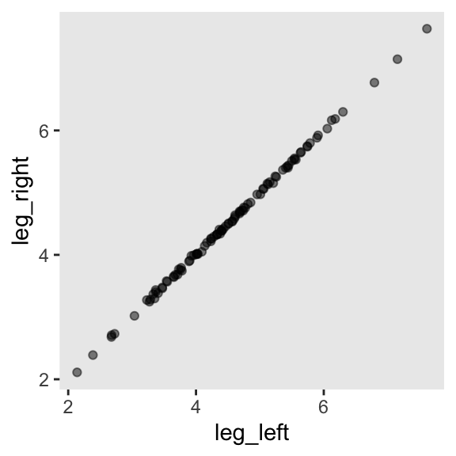
Anyway, make the stan_data with the compose_data() function.
stan_data <- d |>
compose_data()
# What?
str(stan_data)List of 5
$ height : num [1:100(1d)] 5.93 6.51 9.35 9.23 10.36 ...
$ leg_prop : num [1:100(1d)] 0.454 0.412 0.422 0.431 0.429 ...
$ leg_left : num [1:100(1d)] 2.68 2.68 3.93 3.96 4.43 ...
$ leg_right: num [1:100(1d)] 2.71 2.68 3.98 3.99 4.42 ...
$ n : int 100Define the model_code_6.1.
model_code_6.1 <- '
data {
int<lower=1> n;
vector[n] height;
vector[n] leg_left;
vector[n] leg_right;
}
parameters {
real b0;
real b1;
real b2;
real<lower=0> sigma;
}
model {
vector[n] mu;
mu = b0 + b1 * leg_left + b2 * leg_right;
height ~ normal(mu, sigma);
b0 ~ normal(10, 100);
b1 ~ normal(2, 10);
b2 ~ normal(2, 10);
sigma ~ exponential(1);
}
'Here’s our attempt to predict height with both legs with stan().
m6.1 <- stan(
data = stan_data,
model_code = model_code_6.1,
cores = 4, seed = 6)The model did fit, but we got this warning:
Warning: There were 2007 transitions after warmup that exceeded the maximum treedepth. Increase max_treedepth above 10
We don’t know that some of those words mean, yet, at this point in the text. But trust me, friends, it’s not good. For now, check the model summary.
print(m6.1, probs = c(0.055, 0.945))Inference for Stan model: anon_model.
4 chains, each with iter=2000; warmup=1000; thin=1;
post-warmup draws per chain=1000, total post-warmup draws=4000.
mean se_mean sd 5.5% 94.5% n_eff Rhat
b0 0.98 0.01 0.28 0.53 1.42 2410 1
b1 0.15 0.06 2.58 -4.03 4.30 1660 1
b2 1.85 0.06 2.58 -2.32 6.05 1661 1
sigma 0.63 0.00 0.05 0.57 0.71 2244 1
lp__ -5.15 0.04 1.42 -7.87 -3.54 1479 1
Samples were drawn using NUTS(diag_e) at Wed Jul 31 18:43:55 2024.
For each parameter, n_eff is a crude measure of effective sample size,
and Rhat is the potential scale reduction factor on split chains (at
convergence, Rhat=1).The results mimic those in the text. The posterior standard deviations are very large for \(\beta_1\) and \(\beta_2\). Here’s what the damage looks like in a coefficient plot.
as_draws_df(m6.1) |>
pivot_longer(b0:sigma) |>
mutate(name = fct_rev(name)) |>
ggplot(aes(x = value, y = name)) +
stat_pointinterval(.width = 0.89, linewidth = 1/2, shape = 1) +
labs(x = "posterior",
y = NULL)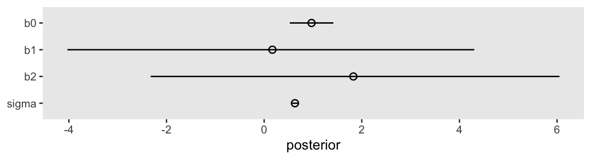
In the middle of page 164, McElreath suggested we might try this again with different seeds. This is a good place to practice some iteration. Our first step will be to make a custom function that will simulate new data of the same form as above and then immediately fit a model based on m6.1 to those new data. To speed up the process, we’ll use the update() function to avoid recompiling the model. Our custom function, sim_and_fit(), will take two arguments. The seed argument will allow us to keep the results reproducible by setting a seed for the data simulation. The n argument will allow us, should we wish, to change the sample size.
sim_and_sample <- function(seed, n = 100) {
set.seed(seed)
# Simulate the new data
stan_data <- tibble(
height = rnorm(n = n, mean = 10, sd = 2),
leg_prop = runif(n = n, min = 0.4, max = 0.5)) |>
mutate(leg_left = leg_prop * height + rnorm(n = n, mean = 0, sd = 0.02),
leg_right = leg_prop * height + rnorm(n = n, mean = 0, sd = 0.02)) |>
compose_data()
# Update `m6.1` to the new data
sampling <- sampling(
object = m6.1@stanmodel,
data = stan_data,
cores = 4,
seed = seed)
}Now use sim_and_sample() to make our simulations which correspond to seed values 1:4. By nesting the seed values and the sim_and_sample() function within purrr::map(), the results will be saved within our tibble, sim.
sim <- tibble(seed = 1:4) |>
mutate(fit = map(.x = seed, .f = sim_and_sample))Now extract the posterior draws from each fit with the as_draws_df() function, saving the results in the as_draws_df column.
sim <- sim |>
mutate(as_draws_df = map(.x = fit, .f = as_draws_df))Take a look at what we did.
print(sim)# A tibble: 4 × 3
seed fit as_draws_df
<int> <list> <list>
1 1 <stanfit[,4,5]> <draws_df [4,000 × 8]>
2 2 <stanfit[,4,5]> <draws_df [4,000 × 8]>
3 3 <stanfit[,4,5]> <draws_df [4,000 × 8]>
4 4 <stanfit[,4,5]> <draws_df [4,000 × 8]>Now plot.
sim |>
select(seed, as_draws_df) |>
unnest(as_draws_df) |>
pivot_longer(b0:sigma) |>
mutate(name = fct_rev(name),
seed = factor(seed)) |>
ggplot(aes(x = value, y = name, group = seed, color = seed)) +
stat_pointinterval(.width = 0.89, linewidth = 1/2, shape = 1,
position = position_dodge(width = -0.5)) +
scale_color_viridis_d(option = "C", end = 0.6) +
labs(x = "posterior",
y = NULL)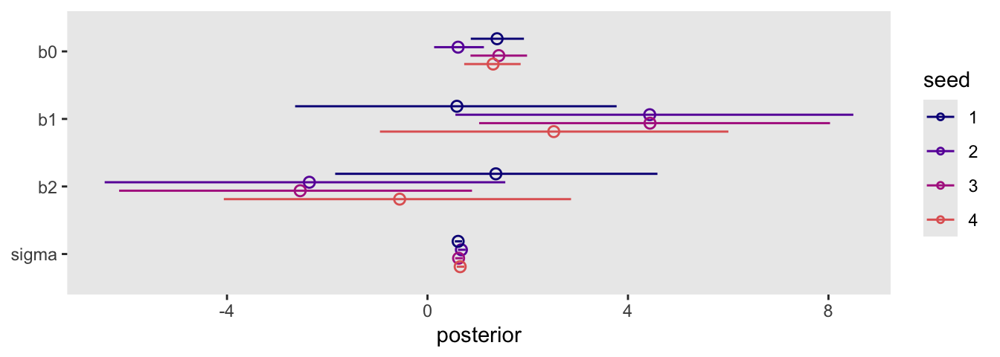
Though the results varied across iterations, the overall pattern was massive uncertainty in the two \(\beta\) parameters.
Here’s Figure 6.2.
# Left
p1 <- as_draws_df(m6.1) |>
ggplot(aes(x = b1, y = b2)) +
geom_point(alpha = 1/3) +
coord_equal(xlim = c(-8, 10),
ylim = c(-8, 10))
# Right
p2 <- as_draws_df(m6.1) |>
ggplot(aes(x = b1 + b2)) +
geom_density(adjust = 1/2)
# Combine
p1 | p2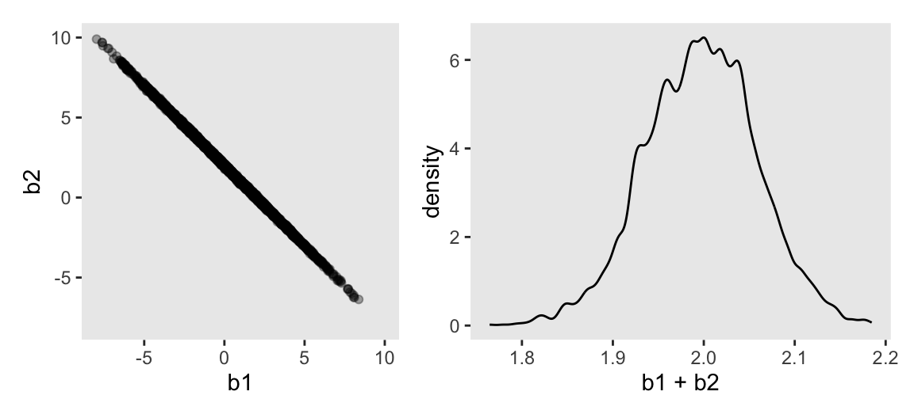
On page 165, McElreath clarified that from the perspective of stan(), this model may as well be
\[ \begin{align*} y_i & \sim \operatorname{Normal}(\mu_i, \sigma) \\ \mu_i & = \alpha + (\beta_1 + \beta_2) x_i. \end{align*} \]
Now fit the revised model where we drop leg_right from the equation.
model_code_6.2 <- '
data {
int<lower=1> n;
vector[n] height;
vector[n] leg_left;
}
parameters {
real b0;
real b1;
real<lower=0> sigma;
}
model {
vector[n] mu;
mu = b0 + b1 * leg_left;
height ~ normal(mu, sigma);
b0 ~ normal(10, 100);
b1 ~ normal(2, 10);
sigma ~ exponential(1);
}
'
m6.2 <- stan(
data = stan_data,
model_code = model_code_6.2,
cores = 4, seed = 6)Check the new summary.
print(m6.2, probs = c(0.055, 0.945))Inference for Stan model: anon_model.
4 chains, each with iter=2000; warmup=1000; thin=1;
post-warmup draws per chain=1000, total post-warmup draws=4000.
mean se_mean sd 5.5% 94.5% n_eff Rhat
b0 0.99 0.01 0.29 0.53 1.45 1410 1
b1 1.99 0.00 0.06 1.89 2.09 1450 1
sigma 0.63 0.00 0.04 0.57 0.71 1652 1
lp__ -4.86 0.03 1.22 -7.22 -3.56 1424 1
Samples were drawn using NUTS(diag_e) at Wed Jul 31 18:53:29 2024.
For each parameter, n_eff is a crude measure of effective sample size,
and Rhat is the potential scale reduction factor on split chains (at
convergence, Rhat=1).That posterior \(\textit{SD}\) for the leg_left parameter looks much better. Compare this density to the one in Figure 6.2.b.
as_draws_df(m6.2) |>
ggplot(aes(x = b1)) +
stat_halfeye(.width = 0.89) +
scale_y_continuous(NULL, breaks = NULL) +
labs(title = "Just one coefficient needed")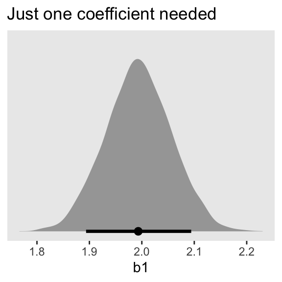
6.1.2 Multicollinear milk.
Load the milk data and standardize the focal variables with the rethinking::standardize() function.
data(milk, package = "rethinking")
d <- milk |>
mutate(k = rethinking::standardize(kcal.per.g),
f = rethinking::standardize(perc.fat),
l = rethinking::standardize(perc.lactose))
rm(milk)Make the stan_data with compose_data().
stan_data <- d |>
select(k:l) |>
compose_data()
# What?
glimpse(stan_data)List of 4
$ k: num [1:29(1d)] -0.94 -0.816 -1.126 -1.002 -0.259 ...
..- attr(*, "scaled:center")= num 0.642
..- attr(*, "scaled:scale")= num 0.161
$ f: num [1:29(1d)] -1.22 -1.03 -1.39 -1.34 -0.47 ...
..- attr(*, "scaled:center")= num 34
..- attr(*, "scaled:scale")= num 14.3
$ l: num [1:29(1d)] 1.307 1.011 1.383 1.587 0.257 ...
..- attr(*, "scaled:center")= num 49.6
..- attr(*, "scaled:scale")= num 14.1
$ n: int 29Define the two univariable models, and define the multivariable model, too.
# Univariable models
model_code_6.3 <- '
data {
int<lower=1> n;
vector[n] k;
vector[n] f;
}
parameters {
real b0;
real b1;
real<lower=0> sigma;
}
model {
vector[n] mu;
mu = b0 + b1 * f;
k ~ normal(mu, sigma);
b0 ~ normal(0, 0.2);
b1 ~ normal(0, 0.5);
sigma ~ exponential(1);
}
'
model_code_6.4 <- '
data {
int<lower=1> n;
vector[n] k;
vector[n] l;
}
parameters {
real b0;
real b2;
real<lower=0> sigma;
}
model {
vector[n] mu;
mu = b0 + b2 * l;
k ~ normal(mu, sigma);
b0 ~ normal(0, 0.2);
b2 ~ normal(0, 0.5);
sigma ~ exponential(1);
}
'
# Multivariable model
model_code_6.5 <- '
data {
int<lower=1> n;
vector[n] k;
vector[n] f;
vector[n] l;
}
parameters {
real b0;
real b1;
real b2;
real<lower=0> sigma;
}
model {
vector[n] mu;
mu = b0 + b1 * f + b2 * l;
k ~ normal(mu, sigma);
b0 ~ normal(0, 0.2);
b1 ~ normal(0, 0.5);
b2 ~ normal(0, 0.5);
sigma ~ exponential(1);
}
'Fit the models with stan().
m6.3 <- stan(
data = stan_data,
model_code = model_code_6.3,
cores = 4, seed = 6)
m6.4 <- stan(
data = stan_data,
model_code = model_code_6.4,
cores = 4, seed = 6)
m6.5 <- stan(
data = stan_data,
model_code = model_code_6.5,
cores = 4, seed = 6)Check the model summaries.
print(m6.3, probs = c(0.055, 0.945))Inference for Stan model: anon_model.
4 chains, each with iter=2000; warmup=1000; thin=1;
post-warmup draws per chain=1000, total post-warmup draws=4000.
mean se_mean sd 5.5% 94.5% n_eff Rhat
b0 0.00 0.00 0.08 -0.13 0.13 3542 1
b1 0.86 0.00 0.09 0.71 1.00 3619 1
sigma 0.49 0.00 0.07 0.39 0.61 3083 1
lp__ 4.08 0.03 1.27 1.64 5.43 1595 1
Samples were drawn using NUTS(diag_e) at Wed Jul 31 18:55:22 2024.
For each parameter, n_eff is a crude measure of effective sample size,
and Rhat is the potential scale reduction factor on split chains (at
convergence, Rhat=1).print(m6.4, probs = c(0.055, 0.945))Inference for Stan model: anon_model.
4 chains, each with iter=2000; warmup=1000; thin=1;
post-warmup draws per chain=1000, total post-warmup draws=4000.
mean se_mean sd 5.5% 94.5% n_eff Rhat
b0 0.00 0.00 0.07 -0.12 0.11 3812 1
b2 -0.90 0.00 0.08 -1.02 -0.77 3893 1
sigma 0.41 0.00 0.06 0.33 0.51 3086 1
lp__ 8.77 0.03 1.30 6.35 10.15 1890 1
Samples were drawn using NUTS(diag_e) at Wed Jul 31 18:55:48 2024.
For each parameter, n_eff is a crude measure of effective sample size,
and Rhat is the potential scale reduction factor on split chains (at
convergence, Rhat=1).print(m6.5, probs = c(0.055, 0.945))Inference for Stan model: anon_model.
4 chains, each with iter=2000; warmup=1000; thin=1;
post-warmup draws per chain=1000, total post-warmup draws=4000.
mean se_mean sd 5.5% 94.5% n_eff Rhat
b0 0.00 0.00 0.07 -0.11 0.12 2620 1
b1 0.26 0.00 0.20 -0.05 0.57 1890 1
b2 -0.66 0.00 0.20 -0.98 -0.34 1845 1
sigma 0.41 0.00 0.06 0.33 0.52 2367 1
lp__ 9.15 0.04 1.52 6.27 10.87 1361 1
Samples were drawn using NUTS(diag_e) at Wed Jul 31 18:56:13 2024.
For each parameter, n_eff is a crude measure of effective sample size,
and Rhat is the potential scale reduction factor on split chains (at
convergence, Rhat=1).Here’s a quick paris() plot of the data.
d |>
select(k, f, l) |>
pairs()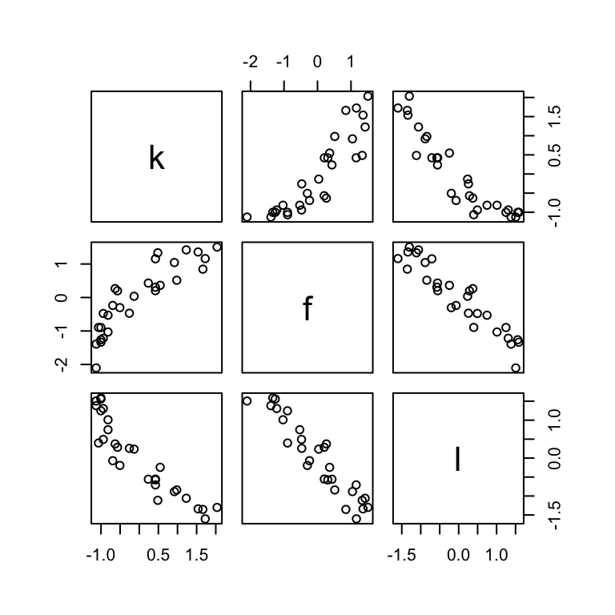
A DAG might help us make sense of this.
dag_coords <- tibble(
name = c("L", "D", "F", "K"),
x = c(1, 2, 3, 2),
y = c(2, 2, 2, 1))
dagify(L ~ D,
F ~ D,
K ~ L + F,
coords = dag_coords) |>
ggplot(aes(x = x, y = y, xend = xend, yend = yend)) +
geom_dag_point(aes(color = name == "D"),
alpha = 1/2, show.legend = FALSE, size = 6.5) +
geom_point(x = 2, y = 2,
color = "blue", shape = 1, size = 6.5, stroke = 1) +
geom_dag_text() +
geom_dag_edges() +
scale_color_manual(values = c("black", "blue")) +
scale_x_continuous(NULL, breaks = NULL, expand = c(0.1, 0.1)) +
scale_y_continuous(NULL, breaks = NULL, expand = c(0.1, 0.1)) +
theme_dag()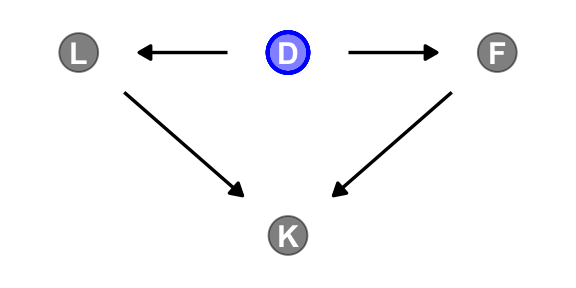
6.1.2.1 Rethinking: Identification guaranteed; comprehension up to you.
6.1.2.2 Overthinking: Simulating collinearity.
First we’ll get the data and define the functions. You’ll note I’ve defined my sim_coll() a little differently from McElreath’s sim.coll() in the text. I’ve omitted rep.sim.coll() as an independent function altogether, but computed similar summary information with the summarise() code at the bottom of the block.
# Define a custom function
sim_coll <- function(seed, rho) {
# Simulate the data
set.seed(seed)
d <- d |>
mutate(x = rnorm(n = n(),
mean = perc.fat * rho,
sd = sqrt((1 - rho^2) * var(perc.fat))))
# Fit an OLS model
m <- lm(data = d,
kcal.per.g ~ perc.fat + x)
# Extract the parameter SD
sqrt(diag(vcov(m)))[2]
}
# How many simulations per `rho`-value would you like?
n_seed <- 100
# How many `rho`-values from 0 to .99 would you like to evaluate the process over?
n_rho <- 30
d <- crossing(seed = 1:n_seed,
rho = seq(from = 0, to = 0.99, length.out = n_rho)) |>
mutate(parameter_sd = purrr::map2_dbl(.x = seed, .y = rho, .f = sim_coll)) |>
group_by(rho) |>
# Describe the output by the mean and 95% intervals
summarise(mean = mean(parameter_sd),
ll = quantile(parameter_sd, prob = 0.025),
ul = quantile(parameter_sd, prob = 0.975))We’ve added 95% interval bands to our version of Figure 5.10.
d |>
ggplot(aes(x = rho, y = mean, ymin = ll, ymax = ul)) +
geom_smooth(stat = "identity",
alpha = 1/3, linewidth = 2/3) +
labs(x = expression(rho),
y = "parameter SD") +
coord_cartesian(ylim = c(0, 0.0072))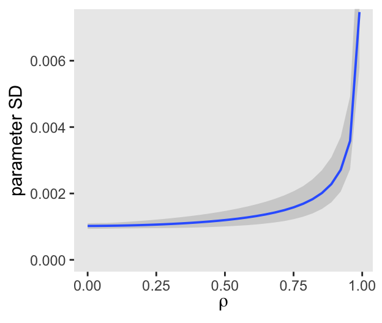
6.2 Post-treatment bias
It helped me understand the next example by mapping out the sequence of events McElreath described in the second paragraph:
- seed and sprout plants
- measure heights
- apply different antifungal soil treatments (i.e., the experimental manipulation)
- measure (a) the heights and (b) the presence of fungus
Based on the design, let’s simulate our data.
# How many plants would you like?
n <- 100
set.seed(71)
d <- tibble(h0 = rnorm(n = n, mean = 10, sd = 2),
treatment = rep(0:1, each = n / 2),
fungus = rbinom(n = n, size = 1, prob = 0.5 - treatment * 0.4),
h1 = h0 + rnorm(n = n, mean = 5 - 3 * fungus, sd = 1))We’ll use head() to peek at the data.
head(d)# A tibble: 6 × 4
h0 treatment fungus h1
<dbl> <int> <int> <dbl>
1 9.14 0 0 14.3
2 9.11 0 0 15.6
3 9.04 0 0 14.4
4 10.8 0 0 15.8
5 9.16 0 1 11.5
6 7.63 0 0 11.1And here’s a quick summary with tidybayes::mean_qi().
d |>
pivot_longer(everything()) |>
group_by(name) |>
mean_qi(.width = 0.89) |>
mutate_if(is.double, round, digits = 2)# A tibble: 4 × 7
name value .lower .upper .width .point .interval
<chr> <dbl> <dbl> <dbl> <dbl> <chr> <chr>
1 fungus 0.23 0 1 0.89 mean qi
2 h0 9.96 6.57 13.1 0.89 mean qi
3 h1 14.4 10.6 17.9 0.89 mean qi
4 treatment 0.5 0 1 0.89 mean qi 6.2.1 A prior is born.
Let’s take a look at the \(p \sim \operatorname{Log-Normal}(0, 0.25)\) prior distribution.
set.seed(6)
# Simulate
sim_p <- tibble(sim_p = rlnorm(1e4, meanlog = 0, sdlog = 0.25))
# Wrangle
sim_p |>
mutate(`exp(sim_p)` = exp(sim_p)) |>
gather() |>
# Plot
ggplot(aes(x = value)) +
geom_density(fill = "gray67") +
scale_x_continuous(breaks = c(0, .5, 1, 1.5, 2, 3, 5)) +
scale_y_continuous(NULL, breaks = NULL) +
coord_cartesian(xlim = c(0, 6)) +
theme(panel.grid.minor.x = element_blank()) +
facet_wrap(~ key, scale = "free_y", ncol = 1)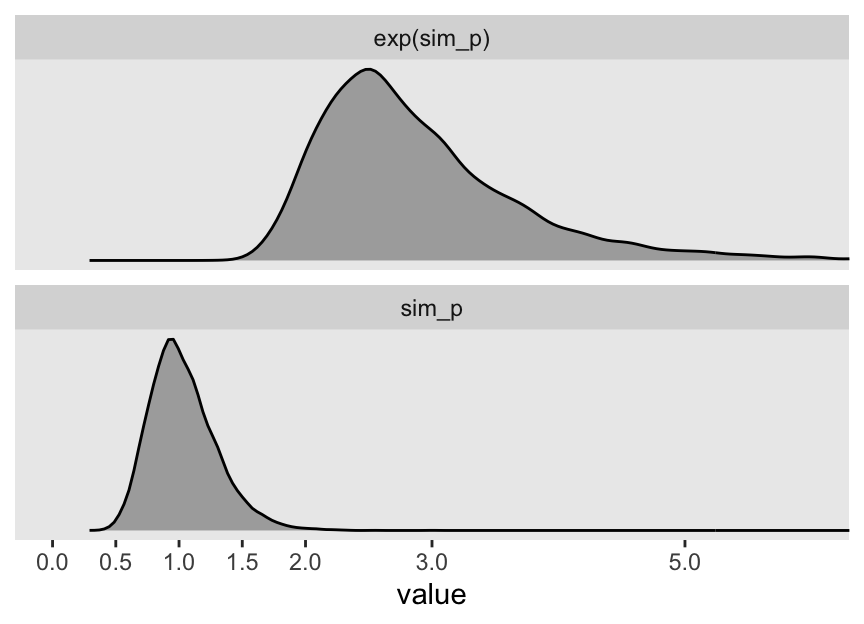
Summarize.
sim_p |>
mutate(`exp(sim_p)` = exp(sim_p)) |>
pivot_longer(everything()) |>
group_by(name) |>
mean_qi(.width = .89) |>
mutate_if(is.double, round, digits = 2)# A tibble: 2 × 7
name value .lower .upper .width .point .interval
<chr> <dbl> <dbl> <dbl> <dbl> <chr> <chr>
1 exp(sim_p) 2.92 1.96 4.49 0.89 mean qi
2 sim_p 1.03 0.67 1.5 0.89 mean qi “This prior expects anything from 40% shrinkage up to 50% growth” (p. 172). So then, our initial statistical model will follow the form
\[ \begin{align*} h_{1i} & \sim \operatorname{Normal}(\mu_i, \sigma) \\ \mu_i & = h_{0i} \times p \\ p & \sim \operatorname{Log-Normal}(0, 0.25) \\ \sigma & \sim \operatorname{Exponential}(1). \end{align*} \]
Define the stan_data and the next model_code.
stan_data <- d |>
compose_data()
# str(stan_data)
model_code_6.6 <- '
data {
int<lower=1> n;
vector[n] h1;
vector[n] h0;
}
parameters {
real p;
real<lower=0> sigma;
}
model {
h1 ~ normal(p * h0, sigma);
p ~ lognormal(0, 0.25);
sigma ~ exponential(1);
}
generated quantities {
// To be discusssed in Chapter 7
vector[n] log_lik;
for (i in 1:n) log_lik[i] = normal_lpdf(h1[i] | p * h0[i], sigma);
}
'You may have noticed we have an exciting new generated quantities with some mysterious code defining log_lik. We won’t be ready to discuss those bits until later in Section 7.2.4 and Section 7.5.1. For now, just let the tension build.
Let’s fit that model.
m6.6 <- stan(
data = stan_data,
model_code = model_code_6.6,
cores = 4, seed = 6)Check the model summary.
print(m6.6, pars = c("p", "sigma"), probs = c(0.055, 0.945))Inference for Stan model: anon_model.
4 chains, each with iter=2000; warmup=1000; thin=1;
post-warmup draws per chain=1000, total post-warmup draws=4000.
mean se_mean sd 5.5% 94.5% n_eff Rhat
p 1.43 0 0.02 1.40 1.46 3749 1
sigma 1.82 0 0.13 1.63 2.05 2741 1
Samples were drawn using NUTS(diag_e) at Thu Aug 1 20:47:35 2024.
For each parameter, n_eff is a crude measure of effective sample size,
and Rhat is the potential scale reduction factor on split chains (at
convergence, Rhat=1).Our updated model follows the form
\[ \begin{align*} h_{1i} & \sim \operatorname{Normal}(\mu_i, \sigma) \\ \mu_i & = h_{0,i} \times p \\ p & = \alpha + \beta_1 \text{treatment}_i + \beta_2 \text{fungus}_i \\ \alpha & \sim \operatorname{Log-Normal}(0, 0.25) \\ \beta_1 & \sim \operatorname{Normal}(0, 0.5) \\ \beta_2 & \sim \operatorname{Normal}(0, 0.5) \\ \sigma & \sim \operatorname{Exponential}(1). \end{align*} \]
Define model_code_6.7.
model_code_6.7 <- '
data {
int<lower=1> n;
vector[n] h1;
vector[n] h0;
vector[n] treatment;
vector[n] fungus;
}
parameters {
// real p; // Now defined below in the model section
real b0;
real b1;
real b2;
real<lower=0> sigma;
}
model {
vector[n] p;
p = b0 + b1 * treatment + b2 * fungus;
h1 ~ normal(p .* h0, sigma);
b0 ~ lognormal(0, 0.2);
b1 ~ normal(0, 0.5);
b2 ~ normal(0, 0.5);
sigma ~ exponential(1);
}
generated quantities {
// To be discusssed in Chapter 7
vector[n] log_lik;
for (i in 1:n) log_lik[i] = normal_lpdf(h1[i] | b0 * h0[i] + b1 * treatment[i] * h0[i] + b2 * fungus[i] * h0[i], sigma);
}
'Note the use of the .* operator in the model code. This is a so-called elementwise function, about which you can learn more here.
Let’s fit that model.
m6.7 <- stan(
data = stan_data,
model_code = model_code_6.7,
cores = 4, seed = 6)Check the model summary.
print(m6.7, pars = c("b0", "b1", "b2", "sigma"), probs = c(0.055, 0.945))Inference for Stan model: anon_model.
4 chains, each with iter=2000; warmup=1000; thin=1;
post-warmup draws per chain=1000, total post-warmup draws=4000.
mean se_mean sd 5.5% 94.5% n_eff Rhat
b0 1.48 0 0.02 1.44 1.52 1581 1
b1 0.00 0 0.03 -0.04 0.05 1633 1
b2 -0.27 0 0.04 -0.33 -0.21 2099 1
sigma 1.45 0 0.10 1.29 1.62 2999 1
Samples were drawn using NUTS(diag_e) at Thu Aug 1 20:52:44 2024.
For each parameter, n_eff is a crude measure of effective sample size,
and Rhat is the potential scale reduction factor on split chains (at
convergence, Rhat=1).The results match those displayed in the text.
6.2.2 Blocked by consequence.
To measure the treatment effect properly, we should omit fungus from the model. This leaves us with the equation
\[ \begin{align*} h_{1i} & \sim \operatorname{Normal}(\mu_i, \sigma) \\ \mu_i & = h_{0i} \times (\alpha + \beta_1 \text{treatment}_i) \\ \alpha & \sim \operatorname{Log-Normal}(0, 0.25) \\ \beta_1 & \sim \operatorname{Normal}(0, 0.5) \\ \sigma & \sim \operatorname{Exponential}(1). \end{align*} \]
Define model_code_6.8.
model_code_6.8 <- '
data {
int<lower=1> n;
vector[n] h1;
vector[n] h0;
vector[n] treatment;
}
parameters {
real b0;
real b1;
real<lower=0> sigma;
}
model {
h1 ~ normal(h0 .* (b0 + b1 * treatment), sigma);
b0 ~ lognormal(0, 0.2);
b1 ~ normal(0, 0.5);
sigma ~ exponential(1);
}
generated quantities {
// To be discusssed in Chapter 7
vector[n] log_lik;
for (i in 1:n) log_lik[i] = normal_lpdf(h1[i] | b0 * h0[i] + b1 * treatment[i] * h0[i], sigma);
}
'Fit that model.
m6.8 <- stan(
data = stan_data,
model_code = model_code_6.8,
cores = 4, seed = 6)Check the model summary.
print(m6.8, pars = c("b0", "b1", "sigma"), probs = c(0.055, 0.945))Inference for Stan model: anon_model.
4 chains, each with iter=2000; warmup=1000; thin=1;
post-warmup draws per chain=1000, total post-warmup draws=4000.
mean se_mean sd 5.5% 94.5% n_eff Rhat
b0 1.38 0 0.03 1.34 1.42 1850 1
b1 0.08 0 0.03 0.03 0.14 1928 1
sigma 1.79 0 0.13 1.60 2.00 2602 1
Samples were drawn using NUTS(diag_e) at Thu Aug 1 20:53:48 2024.
For each parameter, n_eff is a crude measure of effective sample size,
and Rhat is the potential scale reduction factor on split chains (at
convergence, Rhat=1).Now we have a positive treatment effect, \(\beta_1\).
6.2.3 Fungus and \(d\)-separation.
Let’s make a DAG.
# define our coordinates
dag_coords <- tibble(
name = c("H0", "T", "F", "H1"),
x = c(1, 5, 4, 3),
y = c(2, 2, 1.5, 1))
# save our DAG
dag <- dagify(
F ~ T,
H1 ~ H0 + F,
coords = dag_coords)
# plot
dag |>
ggplot(aes(x = x, y = y, xend = xend, yend = yend)) +
geom_dag_point(alpha = 1/2, size = 6.5) +
geom_dag_text() +
geom_dag_edges() +
theme_dag()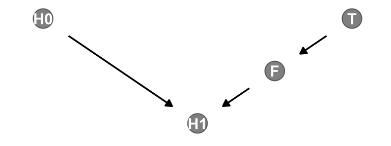
We’ll be making a lot of simple DAGs following this format over this chapter. To streamline out plotting code, let’s make a custom plotting function. I’ll call it gg_simple_dag().
gg_simple_dag <- function(d) {
d |>
ggplot(aes(x = x, y = y, xend = xend, yend = yend)) +
geom_dag_point(alpha = 1/2, size = 6.5) +
geom_dag_text() +
geom_dag_edges() +
theme_dag()
}
# Try `gg_simple_dag()` out!
dag |>
gg_simple_dag()Note that our ggdag object, dag, will also work with the dagitty::dseparated() function.
dag |>
dseparated("T", "H1")[1] FALSEdag |>
dseparated("T", "H1", "F")[1] TRUEThe descriptively-named dagitty::mpliedConditionalIndependencies() function will work, too.
impliedConditionalIndependencies(dag)F _||_ H0
H0 _||_ T
H1 _||_ T | FNow consider a DAG of a different kind of causal structure.
# define our coordinates
dag_coords <- tibble(
name = c("H0", "H1", "M", "F", "T"),
x = c(1, 2, 2.5, 3, 4),
y = c(2, 2, 1, 2, 2))
# save our DAG
dag <- dagify(
F ~ M + T,
H1 ~ H0 + M,
coords = dag_coords)
# plot
dag |>
ggplot(aes(x = x, y = y, xend = xend, yend = yend)) +
geom_dag_point(aes(color = name == "M"),
alpha = 1/2, show.legend = FALSE, size = 6.5) +
geom_point(x = 2.5, y = 1,
color = "blue", shape = 1, size = 6.5, stroke = 1) +
geom_dag_text() +
geom_dag_edges() +
scale_color_manual(values = c("black", "blue")) +
theme_dag()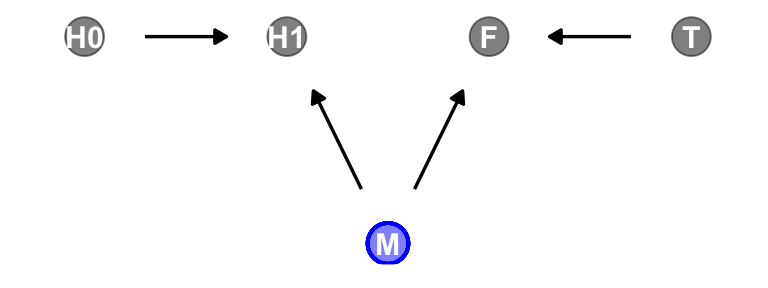
Our custom gg_simple_dag() was a little too brittle to accommodate DAGs that mark of unobserved variables. Since we’ll be making a few more DAGs of this kind, we’ll make one more custom plotting function. We’ll call this one gg_fancy_dag().
gg_fancy_dag <- function(d, x = 1, y = 1, circle = "U") {
d |>
ggplot(aes(x = x, y = y, xend = xend, yend = yend)) +
geom_dag_point(aes(color = name == circle),
alpha = 1/2, size = 6.5, show.legend = FALSE) +
geom_point(x = x, y = y,
color = "blue", shape = 1, size = 6.5, stroke = 1) +
geom_dag_text() +
geom_dag_edges() +
scale_color_manual(values = c("black", "blue")) +
theme_dag()
}
# Check that `gg_fancy_dag()` out
dag |>
gg_fancy_dag(x = 2.5, y = 1, circle = "M")Based on McElreath’s R code 6.20, here we simulate some data based on the new DAG.
set.seed(71)
n <- 1000
d2 <- tibble(
h0 = rnorm(n = n, mean = 10, sd = 2),
treatment = rep(0:1, each = n / 2),
m = rbinom(n = n, size = 1, prob = 0.5),
fungus = rbinom(n = n, size = 1, prob = 0.5 - treatment * 0.4 + 0.4 * m),
h1 = h0 + rnorm(n = n, mean = 5 + 3 * m, sd = 1))
head(d)# A tibble: 6 × 4
h0 treatment fungus h1
<dbl> <int> <int> <dbl>
1 9.14 0 0 14.3
2 9.11 0 0 15.6
3 9.04 0 0 14.4
4 10.8 0 0 15.8
5 9.16 0 1 11.5
6 7.63 0 0 11.1head(d2)# A tibble: 6 × 5
h0 treatment m fungus h1
<dbl> <int> <int> <int> <dbl>
1 9.14 0 0 0 14.8
2 9.11 0 0 0 15.3
3 9.04 0 1 1 16.4
4 10.8 0 1 1 19.1
5 9.16 0 1 1 17.2
6 7.63 0 0 0 13.4Update the stan_data with the new d2 data.
stan_data <- d2 |>
select(-m) |>
compose_data()
# What?
str(stan_data)List of 5
$ h0 : num [1:1000(1d)] 9.14 9.11 9.04 10.83 9.16 ...
$ treatment: int [1:1000(1d)] 0 0 0 0 0 0 0 0 0 0 ...
$ fungus : int [1:1000(1d)] 0 0 1 1 1 0 1 1 0 1 ...
$ h1 : num [1:1000(1d)] 14.8 15.3 16.4 19.1 17.2 ...
$ n : int 1000Use sampling() to refit m6.7 and m6.8 to the new data.
m6.7b <- sampling(
data = stan_data,
object = m6.7@stanmodel,
cores = 4, seed = 6)
m6.8b <- sampling(
data = stan_data,
object = m6.8@stanmodel,
cores = 4, seed = 6)Check the model summaries.
print(m6.7b, probs = c(0.055, 0.945))Inference for Stan model: anon_model.
4 chains, each with iter=2000; warmup=1000; thin=1;
post-warmup draws per chain=1000, total post-warmup draws=4000.
mean se_mean sd 5.5% 94.5% n_eff Rhat
b0 1.52 0.00 0.01 1.50 1.54 1638 1
b1 0.05 0.00 0.01 0.03 0.07 1873 1
b2 0.14 0.00 0.01 0.12 0.16 2166 1
sigma 2.11 0.00 0.05 2.03 2.18 2648 1
lp__ -1251.22 0.04 1.43 -1253.87 -1249.56 1595 1
Samples were drawn using NUTS(diag_e) at Wed Jul 31 19:08:27 2024.
For each parameter, n_eff is a crude measure of effective sample size,
and Rhat is the potential scale reduction factor on split chains (at
convergence, Rhat=1).print(m6.8b, probs = c(0.055, 0.945))Inference for Stan model: anon_model.
4 chains, each with iter=2000; warmup=1000; thin=1;
post-warmup draws per chain=1000, total post-warmup draws=4000.
mean se_mean sd 5.5% 94.5% n_eff Rhat
b0 1.62 0.00 0.01 1.61 1.64 2231 1
b1 -0.01 0.00 0.01 -0.03 0.01 2145 1
sigma 2.21 0.00 0.05 2.13 2.29 2838 1
lp__ -1299.15 0.03 1.25 -1301.55 -1297.82 1768 1
Samples were drawn using NUTS(diag_e) at Wed Jul 31 19:08:32 2024.
For each parameter, n_eff is a crude measure of effective sample size,
and Rhat is the potential scale reduction factor on split chains (at
convergence, Rhat=1).“Including fungus again confounds inference about the treatment, this time by making it seem like it helped the plants, even though it had no effect” (p. 175).
6.2.3.1 Rethinking: Model selection doesn’t help.
6.3 Collider bias
Make the collider bias DAG of the trustworthiness/newsworthiness example.
dag_coords <- tibble(
name = c("T", "S", "N"),
x = 1:3,
y = 1)
dagify(S ~ T + N,
coords = dag_coords) |>
gg_simple_dag()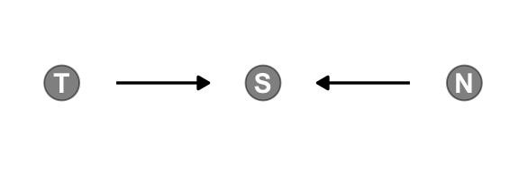
6.3.1 Collider of false sorrow.
All it takes is a single mutate() line in the dagify() function to amend our previous DAG.
dagify(M ~ H + A,
coords = dag_coords |>
mutate(name = c("H", "M", "A"))) |>
gg_simple_dag()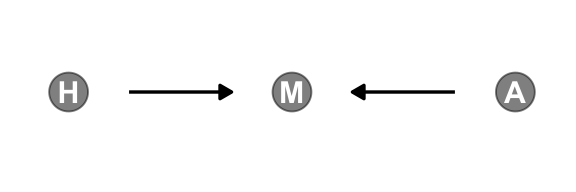
McElreath simulated the data for this section using his custom rethinking::sim_happiness() function. If you’d like to see the guts of the function, execute rethinking::sim_happiness. Our approach will be to simulate the data from the ground up. The workflow to follow is based on help from the great Randall Pruim; I was initially stumped and he lent a helping hand. The first step is to make a simple new_borns() function, which returns a tibble with n unmarried one-year-old’s who have different levels of happiness. We’ll set the default for n at 20.
new_borns <- function(n = 20) {
tibble(a = 1, # 1 year old
m = 0, # not married
h = seq(from = -2, to = 2, length.out = n)) # range of happiness scores
}Here’s how it works.
new_borns() |>
glimpse()Rows: 20
Columns: 3
$ a <dbl> 1, 1, 1, 1, 1, 1, 1, 1, 1, 1, 1, 1, 1, 1, 1, 1, 1, 1, 1, 1
$ m <dbl> 0, 0, 0, 0, 0, 0, 0, 0, 0, 0, 0, 0, 0, 0, 0, 0, 0, 0, 0, 0
$ h <dbl> -2.0000000, -1.7894737, -1.5789474, -1.3684211, -1.1578947, -0.94736…The second step is to make another custom function, update_population(), which takes the input from new_borns(). This function will age up the simulated one-year-old’s from new_borns(), add another cohort of new_borns(), and append the cohorts. As you iterate, the initial cohort of new_borns() will eventually hit the age of 18, which is also the age they’re first eligible to marry (aom = 18).
update_population <- function(pop, n_births = 20, aom = 18, max_age = 65) {
pop |>
mutate(a = a + 1, # Everyone gets one year older
# Some people get married
m = ifelse(m >= 1, 1, (a >= aom) * rbinom(n = n(), size = 1, prob = plogis(h - 4)))) |>
filter(a <= max_age) |> # Old people die
bind_rows(new_borns(n_births)) # New people are born
}Here’s what it looks like if we start with an initial new_borns() and pump them into update_population().
new_borns() |>
update_population() |>
glimpse()Rows: 40
Columns: 3
$ a <dbl> 2, 2, 2, 2, 2, 2, 2, 2, 2, 2, 2, 2, 2, 2, 2, 2, 2, 2, 2, 2, 1, 1, 1,…
$ m <dbl> 0, 0, 0, 0, 0, 0, 0, 0, 0, 0, 0, 0, 0, 0, 0, 0, 0, 0, 0, 0, 0, 0, 0,…
$ h <dbl> -2.0000000, -1.7894737, -1.5789474, -1.3684211, -1.1578947, -0.94736…For our final step, we run the population simulation for 1,000 years. On my M2 MacBook Pro, this took just a few seconds. YMMV.
# This was McElreath's seed
set.seed(1977)
# Year 1
d <- new_borns(n = 20)
# Years 2 through 1000
for(i in 2:1000) {
d <- update_population(d, n_births = 20, aom = 18, max_age = 65)
}
# Now rename()
d <- d |>
rename(age = a, married = m, happiness = h)
# Take a look
glimpse(d)Rows: 1,300
Columns: 3
$ age <dbl> 65, 65, 65, 65, 65, 65, 65, 65, 65, 65, 65, 65, 65, 65, 65, …
$ married <dbl> 0, 0, 0, 1, 1, 0, 0, 0, 1, 1, 1, 1, 1, 1, 1, 1, 0, 1, 1, 1, …
$ happiness <dbl> -2.0000000, -1.7894737, -1.5789474, -1.3684211, -1.1578947, …Summarize the variables.
d |>
pivot_longer(everything()) |>
group_by(name) |>
mean_qi(value) |>
mutate_if(is.double, round, digits = 2)# A tibble: 3 × 7
name value .lower .upper .width .point .interval
<chr> <dbl> <dbl> <dbl> <dbl> <chr> <chr>
1 age 33 2 64 0.95 mean qi
2 happiness 0 -2 2 0.95 mean qi
3 married 0.3 0 1 0.95 mean qi Here’s our version of Figure 6.4.
d |>
mutate(married = factor(married, labels = c("unmarried", "married"))) |>
ggplot(aes(x = age, y = happiness, color = married)) +
geom_point(size = 1.75) +
scale_color_manual(NULL, values = c("grey85", "red3")) +
scale_x_continuous(expand = c(.015, .015))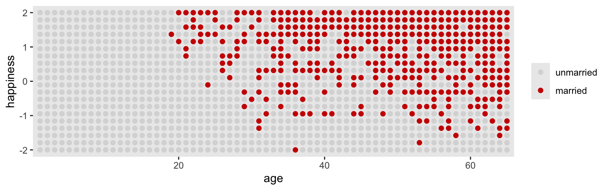
Here’s the likelihood for the simple Gaussian multivariable model predicting happiness:
\[ \begin{align*} \text{happiness}_i & \sim \operatorname{Normal}(\mu_i, \sigma) \\ \mu_i & = \alpha_{\text{married} [i]} + \beta_1 \text{age}_i ,\\ \end{align*} \]
where \(\text{married}[i]\) is the marriage status of individual \(i\). Here we make d2, the subset of d containing only those 18 and up. We then make a new age variable, a, which is scaled such that \(18 = 0\), \(65 = 1\), and so on.
d2 <- d |>
filter(age > 17) |>
mutate(a = (age - 18) / (65 - 18))
head(d2)# A tibble: 6 × 4
age married happiness a
<dbl> <dbl> <dbl> <dbl>
1 65 0 -2 1
2 65 0 -1.79 1
3 65 0 -1.58 1
4 65 1 -1.37 1
5 65 1 -1.16 1
6 65 0 -0.947 1With respect to priors,
happiness is on an arbitrary scale, in these data, from \(-2\) to \(+2\). So our imaginary strongest relationship, taking happiness from maximum to minimum, has a slope with rise over run of \((2 - (-2))/1 = 4\). Remember that 95% of the mass of a normal distribution is contained within 2 standard deviations. So if we set the standard deviation of the prior to half of 4, we are saying that we expect 95% of plausible slopes to be less than maximally strong. That isn’t a very strong prior, but again, it at least helps bound inference to realistic ranges. Now for the intercepts. Each \(\alpha\) is the value of \(\mu_i\) when \(A_i = 0\). In this case, that means at age 18. So we need to allow \(\alpha\) to cover the full range of happiness scores. \(\operatorname{Normal}(0, 1)\) will put 95% of the mass in the \(-2\) to \(+2\) interval. (p. 178)
Here we’ll take one last step before fitting our model with stan(). Saving the mid index variable as a factor will make it easier to interpret the model results.
d2 <- d2 |>
mutate(mid = factor(married + 1, labels = c("single", "married")))
head(d2)# A tibble: 6 × 5
age married happiness a mid
<dbl> <dbl> <dbl> <dbl> <fct>
1 65 0 -2 1 single
2 65 0 -1.79 1 single
3 65 0 -1.58 1 single
4 65 1 -1.37 1 married
5 65 1 -1.16 1 married
6 65 0 -0.947 1 single Now make the stan_data.
stan_data <- d2 |>
compose_data()
# What?
str(stan_data)List of 7
$ age : num [1:960(1d)] 65 65 65 65 65 65 65 65 65 65 ...
$ married : num [1:960(1d)] 0 0 0 1 1 0 0 0 1 1 ...
$ happiness: num [1:960(1d)] -2 -1.79 -1.58 -1.37 -1.16 ...
$ a : num [1:960(1d)] 1 1 1 1 1 1 1 1 1 1 ...
$ mid : num [1:960(1d)] 1 1 1 2 2 1 1 1 2 2 ...
$ n_mid : int 2
$ n : int 960Define the two model_code objects. For model_code_6.9, note how since we’re using mid as an index variable, we have saved it as an integer in an array. We haven’t done this in a while, but we covered it in some detail in Section 5.3.1 if you need a refresher.
model_code_6.9 <- '
data {
int<lower=1> n;
vector[n] happiness;
vector[n] a;
array[n] int mid;
}
parameters {
vector[2] b0;
real b1;
real<lower=0> sigma;
}
model {
happiness ~ normal(b0[mid] + b1 * a, sigma);
b0 ~ normal(0, 1);
b1 ~ normal(0, 2);
sigma ~ exponential(1);
}
'
model_code_6.10 <- '
data {
int<lower=1> n;
vector[n] happiness;
vector[n] a;
}
parameters {
real b0;
real b1;
real<lower=0> sigma;
}
model {
happiness ~ normal(b0 + b1 * a, sigma);
b0 ~ normal(0, 1);
b1 ~ normal(0, 2);
sigma ~ exponential(1);
}
'Fit the models with stan().
m6.9 <- stan(
data = stan_data,
model_code = model_code_6.9,
cores = 4, seed = 6)
m6.10 <- stan(
data = stan_data,
model_code = model_code_6.10,
cores = 4, seed = 6)Check the summaries.
print(m6.9, probs = c(0.055, 0.945))Inference for Stan model: anon_model.
4 chains, each with iter=2000; warmup=1000; thin=1;
post-warmup draws per chain=1000, total post-warmup draws=4000.
mean se_mean sd 5.5% 94.5% n_eff Rhat
b0[1] -0.19 0.00 0.06 -0.29 -0.09 1705 1
b0[2] 1.27 0.00 0.09 1.13 1.41 1696 1
b1 -0.80 0.00 0.11 -0.98 -0.62 1605 1
sigma 1.01 0.00 0.02 0.97 1.05 2810 1
lp__ -490.28 0.03 1.39 -492.85 -488.69 1785 1
Samples were drawn using NUTS(diag_e) at Wed Aug 14 10:08:02 2024.
For each parameter, n_eff is a crude measure of effective sample size,
and Rhat is the potential scale reduction factor on split chains (at
convergence, Rhat=1).print(m6.10, probs = c(0.055, 0.945))Inference for Stan model: anon_model.
4 chains, each with iter=2000; warmup=1000; thin=1;
post-warmup draws per chain=1000, total post-warmup draws=4000.
mean se_mean sd 5.5% 94.5% n_eff Rhat
b0 0.00 0.00 0.08 -0.12 0.12 1271 1
b1 0.00 0.00 0.13 -0.21 0.20 1273 1
sigma 1.22 0.00 0.03 1.17 1.26 2361 1
lp__ -668.61 0.03 1.18 -670.82 -667.33 1595 1
Samples were drawn using NUTS(diag_e) at Wed Jul 31 19:14:37 2024.
For each parameter, n_eff is a crude measure of effective sample size,
and Rhat is the potential scale reduction factor on split chains (at
convergence, Rhat=1).Wow. So when we take out mid, the coefficient for a (\(\beta_1\)) drops to zero.
6.3.2 The haunted DAG.
It gets worse. “Unmeasured causes can still induce collider bias. So I’m sorry to say that we also have to consider the possibility that our DAG may be haunted” (p. 180).
Here’s the unhaunted DAG.
dag_coords <- tibble(
name = c("G", "P", "C"),
x = c(1, 2, 2),
y = c(2, 2, 1))
dagify(P ~ G,
C ~ P + G,
coords = dag_coords) |>
gg_simple_dag()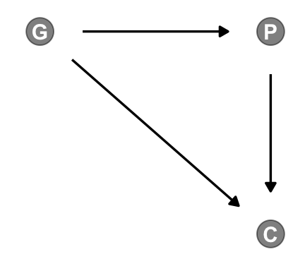
Now we add the haunting variable, U.
dag_coords <- tibble(
name = c("G", "P", "C", "U"),
x = c(1, 2, 2, 2.5),
y = c(2, 2, 1, 1.5))
dagify(P ~ G + U,
C ~ P + G + U,
coords = dag_coords) |>
gg_fancy_dag(x = 2.5, y = 1.5, circle = "U")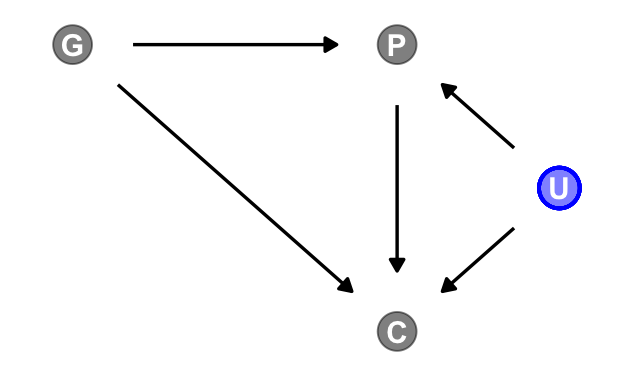
This is a mess. Let’s simulate some data.
# How many grandparent-parent-child triads would you like?
n <- 200
b_gp <- 1 # Direct effect of G on P
b_gc <- 0 # Direct effect of G on C
b_pc <- 1 # Direct effect of P on C
b_u <- 2 # Direct effect of U on P and C
# Simulate triads
set.seed(1)
d <- tibble(u = 2 * rbinom(n = n, size = 1, prob = 0.5) - 1,
g = rnorm(n = n, mean = 0, sd = 1)) |>
mutate(p = rnorm(n = n, mean = b_gp * g + b_u * u, sd = 1)) |>
mutate(c = rnorm(n = n, mean = b_pc * p + b_gc * g + b_u * u, sd = 1))
# What?
head(d)# A tibble: 6 × 4
u g p c
<dbl> <dbl> <dbl> <dbl>
1 -1 -0.620 -1.73 -3.65
2 -1 0.0421 -3.01 -5.30
3 1 -0.911 3.06 3.88
4 1 0.158 1.77 3.79
5 -1 -0.655 -1.00 -2.01
6 1 1.77 5.28 8.87Update the stan_data.
stan_data <- d |>
compose_data()
# What?
str(stan_data)List of 5
$ u: num [1:200(1d)] -1 -1 1 1 -1 1 1 1 1 -1 ...
$ g: num [1:200(1d)] -0.6204 0.0421 -0.9109 0.158 -0.6546 ...
$ p: num [1:200(1d)] -1.73 -3.01 3.06 1.77 -1 ...
$ c: num [1:200(1d)] -3.65 -5.3 3.88 3.79 -2.01 ...
$ n: int 200Make model_code_6.11 and model_code_6.12.
model_code_6.11 <- '
data {
int<lower=1> n;
vector[n] c;
vector[n] p;
vector[n] g;
}
parameters {
real b0;
real b1;
real b2;
real<lower=0> sigma;
}
model {
c ~ normal(b0 + b1 * p + b2 * g, sigma);
[b0, b1, b2] ~ normal(0, 1);
sigma ~ exponential(1);
}
'
model_code_6.12 <- '
data {
int<lower=1> n;
vector[n] c;
vector[n] p;
vector[n] g;
vector[n] u;
}
parameters {
real b0;
real b1;
real b2;
real b3;
real<lower=0> sigma;
}
model {
c ~ normal(b0 + b1 * p + b2 * g + b3 * u, sigma);
[b0, b1, b2, b3] ~ normal(0, 1);
sigma ~ exponential(1);
}
'Fit the models with stan().
m6.11 <- stan(
data = stan_data,
model_code = model_code_6.11,
cores = 4, seed = 6)
m6.12 <- stan(
data = stan_data,
model_code = model_code_6.12,
cores = 4, seed = 6)Check the summaries.
print(m6.11, probs = c(0.055, 0.945))Inference for Stan model: anon_model.
4 chains, each with iter=2000; warmup=1000; thin=1;
post-warmup draws per chain=1000, total post-warmup draws=4000.
mean se_mean sd 5.5% 94.5% n_eff Rhat
b0 -0.12 0.00 0.10 -0.28 0.05 4367 1
b1 1.79 0.00 0.05 1.71 1.86 4098 1
b2 -0.84 0.00 0.11 -1.01 -0.67 3668 1
sigma 1.43 0.00 0.07 1.32 1.55 3876 1
lp__ -174.41 0.03 1.44 -177.00 -172.79 2239 1
Samples were drawn using NUTS(diag_e) at Wed Jul 31 19:18:35 2024.
For each parameter, n_eff is a crude measure of effective sample size,
and Rhat is the potential scale reduction factor on split chains (at
convergence, Rhat=1).print(m6.12, probs = c(0.055, 0.945))Inference for Stan model: anon_model.
4 chains, each with iter=2000; warmup=1000; thin=1;
post-warmup draws per chain=1000, total post-warmup draws=4000.
mean se_mean sd 5.5% 94.5% n_eff Rhat
b0 -0.12 0.00 0.07 -0.24 -0.01 3407 1
b1 1.01 0.00 0.07 0.90 1.11 1709 1
b2 -0.04 0.00 0.10 -0.20 0.12 2087 1
b3 2.00 0.00 0.15 1.76 2.24 1849 1
sigma 1.04 0.00 0.05 0.95 1.12 2851 1
lp__ -110.42 0.04 1.63 -113.42 -108.49 1541 1
Samples were drawn using NUTS(diag_e) at Wed Jul 31 19:19:02 2024.
For each parameter, n_eff is a crude measure of effective sample size,
and Rhat is the potential scale reduction factor on split chains (at
convergence, Rhat=1).Now the posterior for \(\beta_2\) is hovering around 0, where it belongs.
b_gc[1] 0Here’s our version of Figure 6.5.
d <- d |>
mutate(centile = ifelse(p >= quantile(p, prob = .45) & p <= quantile(p, prob = .60), "a", "b"))
d |>
ggplot(aes(x = g, y = c)) +
geom_point(aes(shape = centile, color = factor(u)),
size = 2.5, stroke = 1/4) +
stat_smooth(data = d |>
filter(centile == "a"),
method = "lm", color = "black", fullrange = TRUE, linewidth = 1/2, se = FALSE) +
scale_shape_manual(values = c(19, 1), breaks = NULL) +
scale_color_manual(values = c("black", "blue"), breaks = NULL)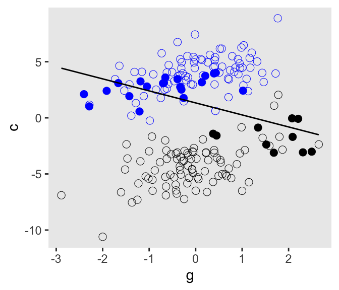
6.3.2.1 Bonus: A second method.
The last two models were largely the same in they were both multivariable models with several predictors; the second just had one more predictor than the other. This is a good opportunity to show another way to fit them both, but using a more general kind of model_code syntax.
Do you recall back in Section 5.1.3.1 where we briefly introduced compact model notation and the design matrix? The method we are about to explore will require we adjust how we are defining the stan_data, and that adjustment involves the notion of a design matrix. We can define a model matrix via the model.matrix() function. We’ll save the object as mm_6.11.
# Define a model matrix
mm_6.11 <- model.matrix(data = d, object = ~p + g)
# What?
str(mm_6.11) num [1:200, 1:3] 1 1 1 1 1 1 1 1 1 1 ...
- attr(*, "dimnames")=List of 2
..$ : chr [1:200] "1" "2" "3" "4" ...
..$ : chr [1:3] "(Intercept)" "p" "g"
- attr(*, "assign")= int [1:3] 0 1 2head(mm_6.11) (Intercept) p g
1 1 -1.726693 -0.62036668
2 1 -3.005182 0.04211587
3 1 3.060416 -0.91092165
4 1 1.774397 0.15802877
5 1 -1.000439 -0.65458464
6 1 5.279500 1.76728727The mm_6.11 object has 3 columns: The first column is a constant 1 for the intercept, and the other two columns are for the predictors p and g. These are based on the design matrix way of presenting a regression model. We can use this mm_6.11 object to define two new elements within compose_data(). The first will be X to stand for the entire model matrix mm_6.11. The second will be k, the number of columns (i.e., “predictors”) in the design matrix.
Here’s how we define the new version of the data list. We’ll call it stan_data_6.11.
stan_data_6.11 <- d |>
select(c, p, g) |>
# Define `X` and `k` right in the `compose_data()` function
compose_data(X = mm_6.11,
k = ncol(mm_6.11))
# What?
str(stan_data_6.11)List of 6
$ c: num [1:200(1d)] -3.65 -5.3 3.88 3.79 -2.01 ...
$ p: num [1:200(1d)] -1.73 -3.01 3.06 1.77 -1 ...
$ g: num [1:200(1d)] -0.6204 0.0421 -0.9109 0.158 -0.6546 ...
$ n: int 200
$ X: num [1:200, 1:3] 1 1 1 1 1 1 1 1 1 1 ...
..- attr(*, "dimnames")=List of 2
.. ..$ : chr [1:200] "1" "2" "3" "4" ...
.. ..$ : chr [1:3] "(Intercept)" "p" "g"
..- attr(*, "assign")= int [1:3] 0 1 2
$ k: int 3For the second model, we add the u predictor. Here we’ll define a new model.matrix() object based on the addition of that predictor, and then follow the same steps to make a stan_data_6.12 object.
mm_6.12 <- model.matrix(data = d, object = ~p + g + u)
stan_data_6.12 <- d |>
select(c, p, g, u) |>
compose_data(X = mm_6.12,
k = ncol(mm_6.12))
# What?
str(stan_data_6.12)List of 7
$ c: num [1:200(1d)] -3.65 -5.3 3.88 3.79 -2.01 ...
$ p: num [1:200(1d)] -1.73 -3.01 3.06 1.77 -1 ...
$ g: num [1:200(1d)] -0.6204 0.0421 -0.9109 0.158 -0.6546 ...
$ u: num [1:200(1d)] -1 -1 1 1 -1 1 1 1 1 -1 ...
$ n: int 200
$ X: num [1:200, 1:4] 1 1 1 1 1 1 1 1 1 1 ...
..- attr(*, "dimnames")=List of 2
.. ..$ : chr [1:200] "1" "2" "3" "4" ...
.. ..$ : chr [1:4] "(Intercept)" "p" "g" "u"
..- attr(*, "assign")= int [1:4] 0 1 2 3
$ k: int 4Now we’ll write one general model_code object with which we’ll fit both models. Note how the syntax we’re using in the model block resembles the \(\mathbf{Xb}\) notation we briefly discussed back in Section 5.1.3.1.
model_code_6.11and12<- '
data {
int<lower=1> n;
int<lower=1> k; // Number of coefficients (including intercept)
vector[n] c; // The criterion
matrix[n, k] X; // Regressors from the model matrix (including intercept)
}
parameters {
vector[k] b; // The beta coefficients are now defined by a vector
real<lower=0> sigma;
}
model {
c ~ normal(X * b, sigma); // Linear model defined in matrix algebra notation Xb
b ~ normal(0, 1);
sigma ~ exponential(1);
}
'Compile the model_code_6.11and12 object with the stan_model() function, and save the results as an object called stan_dso.
stan_dso <- stan_model(model_code = model_code_6.11and12)Finally, we sample from the stan_dso object with the sampling() function, once for each of the new stan_data_6.1x lists.
m6.11b <- sampling(
data = stan_data_6.11,
object = stan_dso,
cores = 4, seed = 6)
m6.12b <- sampling(
data = stan_data_6.12,
object = stan_dso,
cores = 4, seed = 6)Check the model summaries.
print(m6.11b, probs = c(0.055, 0.945))Inference for Stan model: anon_model.
4 chains, each with iter=2000; warmup=1000; thin=1;
post-warmup draws per chain=1000, total post-warmup draws=4000.
mean se_mean sd 5.5% 94.5% n_eff Rhat
b[1] -0.12 0.00 0.10 -0.28 0.05 3758 1
b[2] 1.79 0.00 0.05 1.72 1.86 3719 1
b[3] -0.84 0.00 0.11 -1.01 -0.67 3534 1
sigma 1.43 0.00 0.07 1.32 1.55 3181 1
lp__ -174.39 0.03 1.41 -177.11 -172.78 1933 1
Samples were drawn using NUTS(diag_e) at Wed Jul 31 19:24:54 2024.
For each parameter, n_eff is a crude measure of effective sample size,
and Rhat is the potential scale reduction factor on split chains (at
convergence, Rhat=1).print(m6.12b, probs = c(0.055, 0.945))Inference for Stan model: anon_model.
4 chains, each with iter=2000; warmup=1000; thin=1;
post-warmup draws per chain=1000, total post-warmup draws=4000.
mean se_mean sd 5.5% 94.5% n_eff Rhat
b[1] -0.12 0.00 0.07 -0.23 -0.01 3001 1
b[2] 1.01 0.00 0.07 0.91 1.12 1576 1
b[3] -0.04 0.00 0.10 -0.20 0.12 2098 1
b[4] 2.00 0.00 0.15 1.75 2.23 1605 1
sigma 1.04 0.00 0.05 0.96 1.12 2905 1
lp__ -110.41 0.04 1.59 -113.36 -108.48 1836 1
Samples were drawn using NUTS(diag_e) at Wed Jul 31 19:26:25 2024.
For each parameter, n_eff is a crude measure of effective sample size,
and Rhat is the potential scale reduction factor on split chains (at
convergence, Rhat=1).With this approach, all \(\beta\) coefficients in the model now take generic labels b[k], ranging from \(1, \dots, K\). Otherwise, the parameter summaries themselves are basically the same as with the other method we’ve been using. If you’re fitting one or a few simple models, this approach might seem unnecessary. However, it’s a nice trick to have if you need to scale up.
To further get a sense of the difference between the model.matrix() approach and the one we’ve been primarily using, we might take a look at the structure of the rstan::extract() output. We’ll focus on m6.11 and m6.11b.
# Simple approach
extract(m6.11) |>
str(max.level = 1)List of 5
$ b0 : num [1:4000(1d)] -0.0904 -0.0834 -0.0218 -0.0959 -0.2803 ...
..- attr(*, "dimnames")=List of 1
$ b1 : num [1:4000(1d)] 1.86 1.83 1.79 1.74 1.75 ...
..- attr(*, "dimnames")=List of 1
$ b2 : num [1:4000(1d)] -0.987 -0.838 -0.864 -0.769 -0.708 ...
..- attr(*, "dimnames")=List of 1
$ sigma: num [1:4000(1d)] 1.35 1.53 1.55 1.39 1.33 ...
..- attr(*, "dimnames")=List of 1
$ lp__ : num [1:4000(1d)] -175 -174 -174 -173 -176 ...
..- attr(*, "dimnames")=List of 1# `model.matrix()` approach
extract(m6.11b) |>
str(max.level = 1)List of 3
$ b : num [1:4000, 1:3] -0.2285 -0.1263 -0.1282 -0.0969 -0.13 ...
..- attr(*, "dimnames")=List of 2
$ sigma: num [1:4000(1d)] 1.42 1.38 1.37 1.4 1.32 ...
..- attr(*, "dimnames")=List of 1
$ lp__ : num [1:4000(1d)] -173 -173 -173 -172 -174 ...
..- attr(*, "dimnames")=List of 1The extract() returns the draws from a fitted stan() models parameters in a list format. When we use the simple formula approach as in m6.11, we get a list of one-dimensional arrays, one for each parameter–b0 through sigma–, as well as the lp__. But when we use extract() on m6.11b, which is the model fit with the model.matrix() approach, we get a list of fewer elements, but the first element b is an array with 3 columns, one for each of the columns from the model.matrix() output we used to define the predictors. The other two elements in the list from extract(m6.11b) are for sigma and the lp__.
These arrangements have implications for how you might use the gather_draws() and spread_draws() functions from the tidybayes package. These functions are useful for extracting draws from one or more parameters from a fitted Bayesian model, such as those with stan(), and formatting the results in a tidy data format. The spread_draws() function returns the output in a wide format with respect to the parameters, and the gather_draws() function returns the output in a long format w/r/t the parameters. Here are first 10 rows of the gather_draws() and spread_draws() output for m6.11.
# `gather_draws()`
m6.11 |>
gather_draws(b0, b1, b2) |>
arrange(.draw) |>
head(n = 10)# A tibble: 10 × 5
# Groups: .variable [3]
.chain .iteration .draw .variable .value
<int> <int> <int> <chr> <dbl>
1 1 1 1 b0 -0.154
2 1 1 1 b1 1.79
3 1 1 1 b2 -0.828
4 1 2 2 b0 -0.164
5 1 2 2 b1 1.68
6 1 2 2 b2 -0.823
7 1 3 3 b0 -0.143
8 1 3 3 b1 1.89
9 1 3 3 b2 -0.763
10 1 4 4 b0 -0.0669# `spread_draws()`
m6.11 |>
spread_draws(b0, b1, b2) |>
head(n = 10)# A tibble: 10 × 6
.chain .iteration .draw b0 b1 b2
<int> <int> <int> <dbl> <dbl> <dbl>
1 1 1 1 -0.154 1.79 -0.828
2 1 2 2 -0.164 1.68 -0.823
3 1 3 3 -0.143 1.89 -0.763
4 1 4 4 -0.0669 1.85 -1.02
5 1 5 5 -0.167 1.74 -0.721
6 1 6 6 -0.259 1.75 -0.740
7 1 7 7 0.0162 1.83 -0.961
8 1 8 8 0.0213 1.78 -0.980
9 1 9 9 -0.0983 1.82 -0.870
10 1 10 10 -0.00547 1.72 -0.765The output for both are long w/r/t the .chain, .iteration, and .draw columns. But whereas the gather_draws() output are also long w/r/t the b parameters, as indicated in the .variable column, each of the b parameters gets its own column in the spread_draws().
Also note that the long-formatted output for gather_draws() is automatically grouped by the three levels of .variable, but the wide-formatted output for spread_draws() is not so grouped.
Now consider the format for m6.11b, the model fit using the model.matrix() approach for the \(\beta\) coefficients. Note how we use the [] notation to indicate the b parameters are in a multidimensional array format, and we further indicated we wanted to index those dimensions with a column called k. We could have chosen another name, such as index.
# `gather_draws()`
m6.11b |>
gather_draws(b[k]) |> # Notice our `[]` syntax
arrange(.draw) |>
head(n = 10)# A tibble: 10 × 6
# Groups: k, .variable [3]
k .chain .iteration .draw .variable .value
<int> <int> <int> <int> <chr> <dbl>
1 1 1 1 1 b -0.145
2 2 1 1 1 b 1.80
3 3 1 1 1 b -0.801
4 1 1 2 2 b -0.0535
5 2 1 2 2 b 1.77
6 3 1 2 2 b -0.958
7 1 1 3 3 b -0.153
8 2 1 3 3 b 1.76
9 3 1 3 3 b -0.800
10 1 1 4 4 b -0.152 # Look at this output with an alternative name for the `b` dimensions
# m6.11b |>
# gather_draws(b[index]) |>
# arrange(.draw) |>
# head(n = 10)
# `spread_draws()`
m6.11b |>
spread_draws(b[k]) |> # Notice our `[]` syntax
arrange(.draw) |>
head(n = 10)# A tibble: 10 × 5
# Groups: k [3]
k b .chain .iteration .draw
<int> <dbl> <int> <int> <int>
1 1 -0.145 1 1 1
2 2 1.80 1 1 1
3 3 -0.801 1 1 1
4 1 -0.0535 1 2 2
5 2 1.77 1 2 2
6 3 -0.958 1 2 2
7 1 -0.153 1 3 3
8 2 1.76 1 3 3
9 3 -0.800 1 3 3
10 1 -0.152 1 4 4Though maybe obscured by our use of head(n = 10), the output for both is long w/r/t the \(\beta\) parameters. The output for each of the \(\beta\) parameters is indexed by the k column in both, and whereas the output for gather_draws() now has a .variable column with a constant value b and a .value column for the actual values of the draws, the output for spread_draws() simply collapsed those two into a single column b which contains the values from each parameter’s draw.
Also note the output from both functions is grouped. But whereas the output from gather_draws() is grouped by k and .variable, the output from spread_draws() is grouped only for k.
The gather_draws() approach can be nice for plotting parameter posteriors for models using the model.matrix() approach.
m6.11b |>
gather_draws(b[k]) |>
mutate(beta = str_c("beta[", k, "]")) |>
ggplot(aes(x = .value, y = beta)) +
stat_halfeye(.width = 0.89) +
scale_y_discrete(NULL, expand = expansion(mult = 0.05), labels = ggplot2:::parse_safe) +
labs(title = "m6.11b",
subtitle = "Default numbering in k")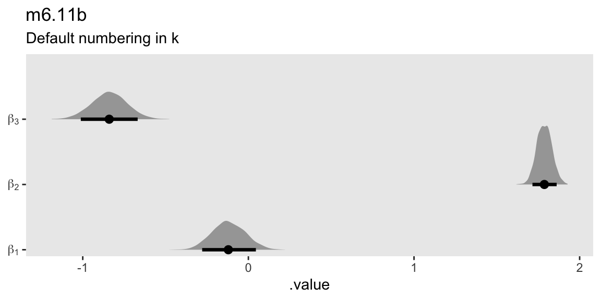
m6.11b |>
gather_draws(b[k]) |>
# Note the change `k - 1`
mutate(beta = str_c("beta[", k - 1, "]")) |>
ggplot(aes(x = .value, y = beta)) +
stat_halfeye(.width = 0.89) +
scale_y_discrete(NULL, expand = expansion(mult = 0.05), labels = ggplot2:::parse_safe) +
labs(title = "m6.11b",
subtitle = "Adjusted numbering in k to match convention")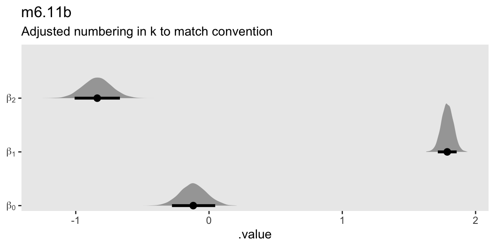
The same plot requires the more sophisticated regular-expression syntax within str_extract() to define the beta labels for the y axis for a model like m6.11.
m6.11 |>
gather_draws(b0, b1, b2) |>
mutate(beta = str_c("beta[", str_extract(.variable, "\\d+"), "]")) |>
ggplot(aes(x = .value, y = beta)) +
stat_halfeye(.width = 0.89) +
scale_y_discrete(NULL, expand = expansion(mult = 0.05), labels = ggplot2:::parse_safe) +
labs(title = "m6.11",
subtitle = "Default numbering in k")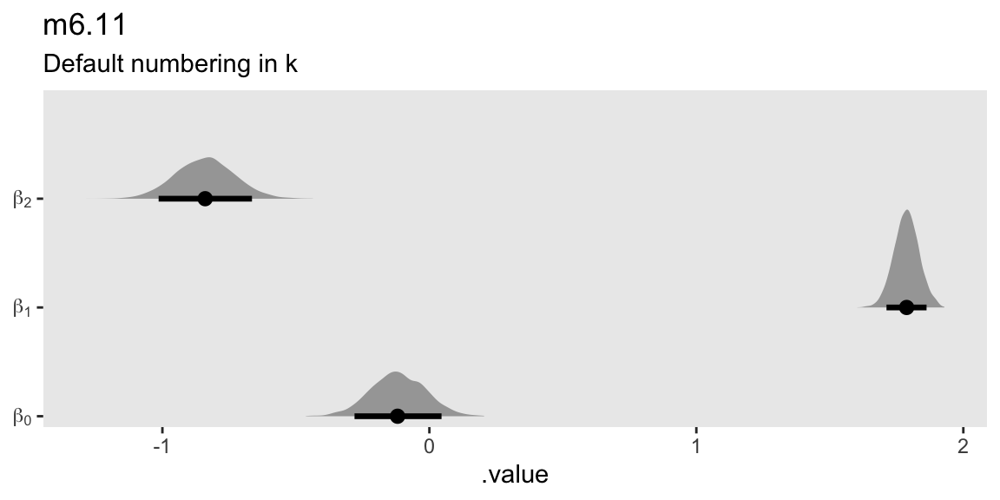
6.4 Confronting confounding
6.4.1 Shutting the backdoor.
6.4.2 Two roads.
6.4.3 Backdoor waffles.
6.4.3.1 Rethinking: DAGs are not enough.
6.4.3.2 Overthinking: A smooth operator.
6.5 Summary
Session info
sessionInfo()R version 4.4.0 (2024-04-24)
Platform: aarch64-apple-darwin20
Running under: macOS Ventura 13.4
Matrix products: default
BLAS: /Library/Frameworks/R.framework/Versions/4.4-arm64/Resources/lib/libRblas.0.dylib
LAPACK: /Library/Frameworks/R.framework/Versions/4.4-arm64/Resources/lib/libRlapack.dylib; LAPACK version 3.12.0
locale:
[1] en_US.UTF-8/en_US.UTF-8/en_US.UTF-8/C/en_US.UTF-8/en_US.UTF-8
time zone: America/Chicago
tzcode source: internal
attached base packages:
[1] stats graphics grDevices utils datasets methods base
other attached packages:
[1] dagitty_0.3-4 ggdag_0.2.12 posterior_1.6.0 patchwork_1.2.0
[5] rstan_2.32.6 StanHeaders_2.32.7 tidybayes_3.0.6 lubridate_1.9.3
[9] forcats_1.0.0 stringr_1.5.1 dplyr_1.1.4 purrr_1.0.2
[13] readr_2.1.5 tidyr_1.3.1 tibble_3.2.1 ggplot2_3.5.1
[17] tidyverse_2.0.0
loaded via a namespace (and not attached):
[1] svUnit_1.0.6 tidyselect_1.2.1 viridisLite_0.4.2
[4] farver_2.1.1 viridis_0.6.5 loo_2.8.0
[7] ggraph_2.2.1 fastmap_1.1.1 tensorA_0.36.2.1
[10] tweenr_2.0.3 digest_0.6.35 timechange_0.3.0
[13] lifecycle_1.0.4 processx_3.8.4 magrittr_2.0.3
[16] compiler_4.4.0 rlang_1.1.4 tools_4.4.0
[19] igraph_2.0.3 utf8_1.2.4 yaml_2.3.8
[22] knitr_1.46 graphlayouts_1.1.1 labeling_0.4.3
[25] htmlwidgets_1.6.4 pkgbuild_1.4.4 curl_5.2.1
[28] cmdstanr_0.8.1 abind_1.4-5 withr_3.0.0
[31] polyclip_1.10-6 grid_4.4.0 stats4_4.4.0
[34] fansi_1.0.6 colorspace_2.1-0 inline_0.3.19
[37] scales_1.3.0 rethinking_2.40 MASS_7.3-60.2
[40] cli_3.6.3 mvtnorm_1.2-5 rmarkdown_2.26
[43] generics_0.1.3 RcppParallel_5.1.7 rstudioapi_0.16.0
[46] tzdb_0.4.0 cachem_1.0.8 ggforce_0.4.2
[49] splines_4.4.0 parallel_4.4.0 matrixStats_1.3.0
[52] vctrs_0.6.5 V8_4.4.2 boot_1.3-30
[55] Matrix_1.7-0 jsonlite_1.8.8 hms_1.1.3
[58] arrayhelpers_1.1-0 ggrepel_0.9.5 ggdist_3.3.2
[61] glue_1.7.0 codetools_0.2-20 ps_1.7.6
[64] distributional_0.4.0 stringi_1.8.4 gtable_0.3.5
[67] shape_1.4.6.1 QuickJSR_1.1.3 munsell_0.5.1
[70] pillar_1.9.0 htmltools_0.5.8.1 R6_2.5.1
[73] tidygraph_1.3.1 evaluate_0.23 lattice_0.22-6
[76] backports_1.5.0 memoise_2.0.1 Rcpp_1.0.12
[79] nlme_3.1-164 coda_0.19-4.1 gridExtra_2.3
[82] checkmate_2.3.1 mgcv_1.9-1 xfun_0.43
[85] pkgconfig_2.0.3
Comments